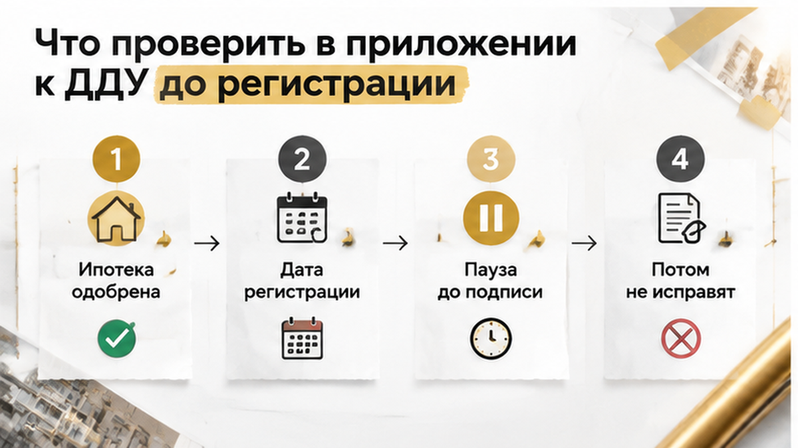
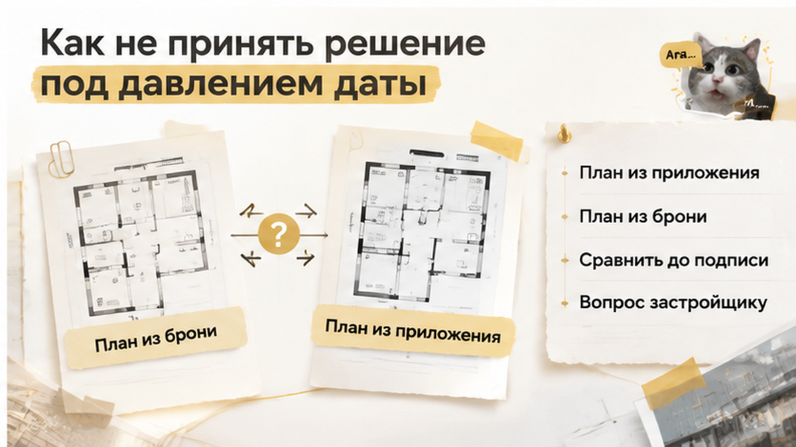

За 4 дня до регистрации ДДУ семья из Тюмени обнаружила: в выбранной новостройке второй санузел исчез из договора, хотя в брони и шоу-руме их было два. Цена при этом не изменилась, а семейную ипотеку уже предварительно одобрили. Покупатели остановили регистрацию и попросили либо исправить проект договора, либо письменно объяснить, почему за прежние деньги состав квартиры стал другим. Разницу нашли не на приёмке и не после выдачи ключей, а при обычной сверке документов перед подписанием.
Я Святослав Шакин, The Риэлтор Тюмень. Разбираю такие ситуации в Telegram и MAX: что проверять в новостройке до ДДУ, где бронь расходится с договором и когда ещё можно остановиться без потери денег.
Семья выбирала квартиру в тюменской новостройке под семейную ипотеку. В шоу-руме менеджер показывал план с двумя санузлами, и такой же вариант был указан в PDF брони. Для покупателей это была не мелочь на бумаге: один санузел можно было оставить гостевым, второй — основным. Они выбирали не только площадь и этаж, но и то, как семья будет жить в этой квартире каждый день.
Перед сделкой покупатели попросили проект ДДУ вместе с приложениями. До регистрации оставалось четыре дня. Именно тогда, открыв план квартиры в приложении к договору, они увидели только один санузел. Цена осталась прежней, а письменного объяснения, куда делось второе помещение, никто не дал.
В этот момент семья не стала спорить на уровне «нам же показывали другое». Покупатели остановили регистрацию и не перешли к открытию эскроу. Они попросили либо исправленный проект договора с планом из брони, либо новую цену и условия в письменном виде.
Устного обещания «потом всё поправим» оказалось недостаточно. После подписания ДДУ спорить пришлось бы уже с тем, что закреплено в самом договоре и его приложениях. А пока документы ещё не подписаны, у покупателя остаётся возможность задать простой вопрос: какую именно квартиру ему предлагают купить за эти деньги?
Это не означало, что семья автоматически отказывалась от квартиры. Сначала нужно было понять, какая характеристика является действительной: та, что была в брони и на экране шоу-рума, или та, что появилась в проекте ДДУ. Пока эти версии не совпадали, переходить к регистрации было рано.
Бронь фиксирует намерение купить конкретный объект на оговорённых условиях. Но квартиру передают не по картинке на экране, не по рекламному рендеру и не по словам менеджера. Основанием становится ДДУ вместе с его приложениями.
Для договора важны характеристики объекта: площадь, номер квартиры, этаж, планировка и помещения, которые входят в её состав. План в приложении показывает, что именно стороны договорились передать покупателю. Если на этом плане указан один санузел, после подписания будет сложнее ссылаться только на PDF брони — особенно если цена в обоих документах одинаковая, а обязательство сохранить второй санузел в ДДУ отдельно не прописано.
Закон о долевом строительстве здесь не нужно превращать в длинную лекцию. Практический смысл для покупателя простой: в ДДУ и приложениях должен быть понятен объект, который застройщик обязуется передать. Планировка и помещения квартиры — в том числе санузлы, лоджии, кладовые и другие части — должны совпадать с тем, за что человек принимает на себя обязательства и перечисляет деньги.
Поэтому вопрос не в том, какой файл выглядел убедительнее. Вопрос в том, какую квартиру покупатель оплачивает по договору. Если бронь обещает одно, а приложение к ДДУ закрепляет другое, перед регистрацией стоит остановиться и попросить письменное объяснение.
В шоу-руме семья смотрела на один и тот же план вместе с менеджером. В PDF брони были указаны два санузла — именно на этот вариант покупатели ориентировались, когда оценивали квартиру и её цену.
Но за четыре дня до регистрации ДДУ они открыли приложение к проекту договора и увидели уже другую картину: на плане остался один санузел. Цена при этом не изменилась.
Это не вопрос ракурса или того, как на рендере расставили мебель. Приложение к ДДУ описывает конкретную квартиру: её помещения, расположение и площадь. Если помещение исчезло из этого документа, покупателю нужно понять, почему это произошло и что именно застройщик собирается передать.
Бронь сама по себе ДДУ не заменяет. Она могла зафиксировать намерение сторон и цену, но перед подписанием важно смотреть, какие характеристики объекта закреплены в договоре и его приложениях. В этой истории расхождение обнаружили до подписи и до движения денег.
Похожая проблема бывает не только с санузлами. В разных файлах могут отличаться площадь, конфигурация стен, лоджия, кладовая или отделка. Поэтому PDF брони нужно сопоставлять с планом, который войдёт в ДДУ. Бронь не всегда совпадает с тем, что закреплено в документах проекта.
При этом само расхождение ещё не доказывает обман. В проекте могли использовать разные версии планов, документ могли изменить после технической корректировки. Но причина не отменяет главного: до подписи документы нужно привести к одному понятному виду.
Семья не стала подписывать ДДУ с одним санузлом. Покупатели попросили либо исправить проект договора и приложение-план, либо письменно изменить цену с учётом тех условий, которые были указаны в договоре.
Сначала нужно было привести документы к одному виду, а уже потом регистрировать ДДУ и открывать эскроу. Пока договор не зарегистрирован, у покупателя остаётся возможность остановиться и задать вопросы. Это не означает, что застройщик согласится на любую формулировку, но позволяет не принимать чужую версию молча.
Если на показе и при бронировании был один объект, а в ДДУ описан другой, обещание «на приёмке всё будет как в шоу-руме» проблему не решает. Нужно письменно зафиксировать, какой план был в брони, что указано в приложении к ДДУ и какое исправление предлагает застройщик.
Похожая ситуация возникала перед эскроу из-за ошибки в реквизитах: банк остановил операцию, пока ключевой документ не проверили. Проверка до открытия эскроу может остановить сделку на безопасной стадии.
Семья выбрала простой порядок: сначала получить исправление или новую цену в письменном виде, затем переходить к регистрации. Давление из-за одобренной ипотеки, выбранной квартиры и назначенной даты не меняет содержания договора. Предодобрение банка — ещё не обязанность соглашаться с любым проектом ДДУ.
Если в брони два санузла, а в ДДУ один — вы бы подписывали «как есть» ради сохранения цены или срывали сделку?
В Telegram и MAX я показываю, как читать проект ДДУ и приложения до регистрации: без паники, но и без надежды на устное «потом исправим».

Перед подписанием откройте приложение-план и положите рядом бронь. Сверьте планировку: сколько санузлов указано, какие помещения входят в состав квартиры, есть ли лоджия, кладовая и какая отделка обещана.
Смотреть нужно именно на комплект документов, который пойдёт в договор. Рендер в шоу-руме может быть красивее, переписка — убедительнее, а устное объяснение менеджера — спокойнее. Но квартиру передадут не по картинке и не по обещанию «потом всё будет», а по тому, что закреплено в ДДУ и его приложениях.
Отдельно сравните названия помещений в разных файлах. На одном плане может стоять «санузел», на другом — «ванная», а где-то помещение вообще исчезает. Само название не всегда меняет смысл, но если пропала часть квартиры или изменилось её назначение, вопрос нужно задать до подписи, пока документы ещё можно привести к одной версии.
Сверьте и цену. Если состав квартиры стал меньше, а стоимость осталась прежней, попросите письменно объяснить причину: это ошибка в приложении, техническая корректировка проекта или застройщик действительно предлагает другой объект. Не стоит самому решать, сколько «должен стоить» второй санузел, и считать проблему закрытой устной скидкой.
Фраза «исправим потом» тоже должна превратиться в документ. Попросите новую редакцию проекта ДДУ, исправленное приложение или письменное изменение условий, которое войдёт в подписываемый комплект. Сообщение в чате подтверждает, что разговор был, но не заменяет характеристику квартиры в договоре.
Так же стоит проверять отделку. В другой сделке обещание чистовой квартиры не дошло до условий передачи: если отделка важна, она должна быть отражена в договоре и приложениях.
Семейная ипотека добавляет сделке нервов: банк уже предварительно одобрил кредит, регистрация назначена, а понравившаяся квартира может уйти другому покупателю. В этот момент легко сказать себе: «Подпишем сейчас, а второй санузел потом подтвердим письмом». Но после регистрации спорить придётся уже с тем, что стороны подписали, а не с тем, что показывали в шоу-руме.
Поэтому пауза перед ДДУ — не каприз и не попытка сорвать покупку. Это последняя спокойная точка, в которой можно задать вопрос: какую именно квартиру описывает договор и совпадает ли она с той, за которую семья согласилась платить.
В этой истории покупатели не стали подписывать проект с одним санузлом. Они попросили либо исправить ДДУ и приложение-план, либо письменно изменить цену и условия с учётом фактического состава квартиры. Регистрацию остановили до ответа, а эскроу не открывали вслепую.
Если до регистрации осталось несколько дней, разберите проект ДДУ заранее. Отличие в последний момент — не повод ограничиваться звонком менеджеру: запросите объяснение письменно и сохраните версии планов. Предодобрение ипотеки не обязывает соглашаться с договором, в котором квартира стала другой.

В этой ситуации важно было не победить в споре с менеджером, а вовремя остановить регистрацию до денег. Когда план, цена и договор проверены вместе, решение остаётся за покупателем — подписывать исправленный комплект или спокойно выйти из сделки.